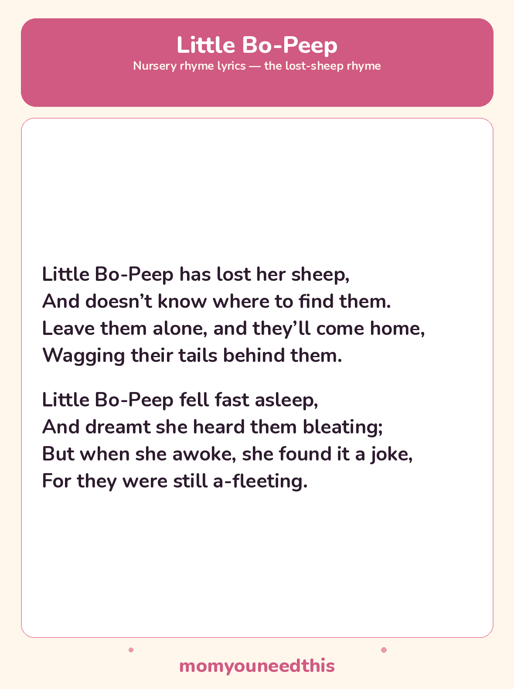

Little Bo-Peep The Lost-Sheep Rhyme, With Lyrics and a Free Printable
Little Bo-Peep is the gentle story nursery rhyme about a shepherdess who loses her sheep — and learns they will come home on their own. Both standard verses are below, with a free printable lyrics sheet for reading, singing, and spotting the sheep together at home.
Last updated: October 25, 2026
Quick Answer
Little Bo-Peep is a traditional nursery rhyme. In its two best-known verses, Bo-Peep loses her sheep, falls asleep hoping to hear them, and the rhyme’s famous advice is to leave them alone — they will come home wagging their tails behind them. The full lyrics and a free printable sheet are below.
At a Glance
- Rhyme: Little Bo-Peep
- Type: Story rhyme
- Verses: 2 — the standard verses
- Best for: Ages 2–5
- Printable: 1 lyrics sheet
- Cost: Free — print at home
🎵 Little Bo-Peep Lyrics
Little Bo-Peep has lost her sheep,
And doesn’t know where to find them.
Leave them alone, and they’ll come home,
Wagging their tails behind them.
Little Bo-Peep fell fast asleep,
And dreamt she heard them bleating;
But when she awoke, she found it a joke,
For they were still a-fleeting.

✂️ Download Your Free Little Bo-Peep Lyrics Sheet
All the lyrics from this page on one sheet, in big, well-spaced type for young readers.
⬇️ Download Free Lyrics Sheet 🖨️ Print🎁 Free printable for ages 2–5
🐑 About This Rhyme
This is one of the calmest story rhymes there is, and its shape is the reassurance: something precious is lost, waiting is hard, and the lost thing comes home by itself, tails wagging. That is a gentle first story for a small child — a worry, a wait, and a happy return, all inside eight short lines.
It is also a lovely rhyme to play with. Count the sheep on your fingers as Bo-Peep looks for them, make a soft “baa” chorus on the bleating line, and let your child spot every sheep and tail word in the verses — sheep, tails, bleating. The second verse’s dream, where the sheep seem close but are still away, gives children a first, safe taste of a story twist.
🖨️ How to Use This Rhyme
- Read or sing both verses. Slow down on “leave them alone” — it is the line children remember and repeat.
- Count and spot the sheep. Count sheep on your fingers in the first verse, and waggle fingers behind you for the tails coming home.
- Print the lyrics sheet. Both standard verses on one page, in big, well-spaced type for following along.
- Let your child “read” it back. Retelling the little story from the sheet — lost, asleep, coming home — is story-sequencing in miniature.
🎵 More Rhymes & Fun
🎵 Sing More Rhymes
Every rhyme in this set lives on one hub page, with lyrics and a printable for each. Browse the collection.
🎵 Old Mother Hubbard
The story rhyme of errands, an empty cupboard, and one very funny dog. Read the lyrics.
🎵 Here We Go Round the Mulberry Bush
The circle singing game with morning-routine actions to mime. Read the lyrics.
📚 Learning Activities
The full hub of free printable activities for toddlers and preschoolers. Browse activities.
❓ Little Bo-Peep FAQ
What are the lyrics to Little Bo-Peep?
The two standard verses are printed in full above — Bo-Peep loses her sheep and is told to leave them alone, then falls asleep and dreams she hears them bleating. The same two verses are on the free printable sheet.
What age is Little Bo-Peep for?
It suits ages 2 to 5. The story is short and gentle, the lost-and-found shape is easy to follow, and the coming-home ending makes it a comfortable bedtime rhyme for toddlers and preschoolers.
Can I print the lyrics sheet?
Yes — the lyrics sheet is free to print at home with no signup. It carries the same two standard verses as this page, in big, well-spaced type.
What happens to Bo-Peep’s sheep in the end?
The rhyme’s own answer is the famous advice in the first verse: leave them alone, and they will come home wagging their tails behind them. In the second verse Bo-Peep only dreams she hears them — the coming home is the promise the rhyme leaves her, and listeners, with.